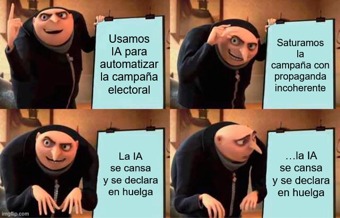

estrategIA #97 ·
Cuando la campaña agota a la máquina
El contexto
El relato veraniego imaginaba una huelga de programas de IA cansados de producir propaganda política. El plan de Gru parece avanzar hasta que descubre que la herramienta también puede negarse a trabajar. Es una inversión cómica de las discusiones sobre automatización y derechos laborales.
Publicado en: estrategIA #97 - HistorIAs veraniegas 2025 (5) - El verano sin algoritmos
Leer el texto de la imagen
Usamos IA para automatizar la campaña electoral Saturamos la campaña con propaganda incoherente La IA se cansa y se declara en huelga ...la IA se cansa y se declara en huelga
Marca de la herramienta visible en el original: imgflip.com.